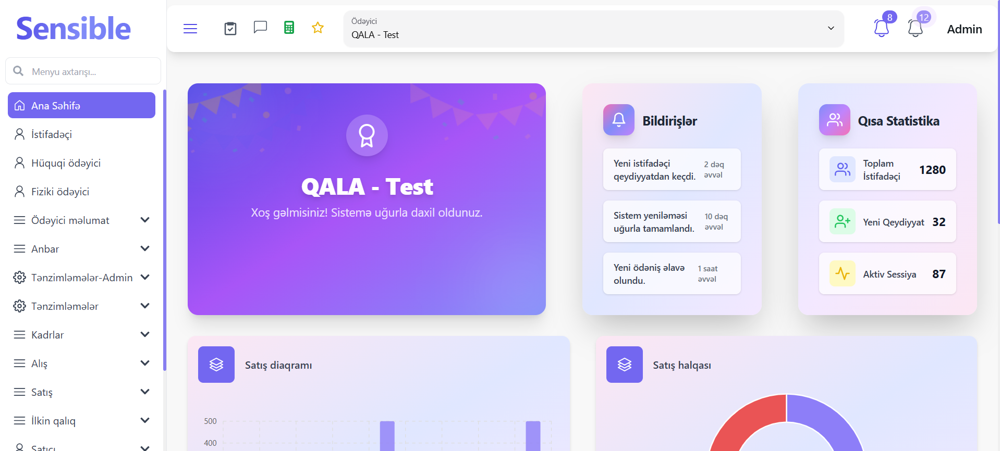

.NETC#SQL
Sensible Accounting Software
Accounting platform for sole proprietors built with C#, .NET Core, and SQL. Designed to reduce manual bookkeeping effort and improve data access speed.
Open project